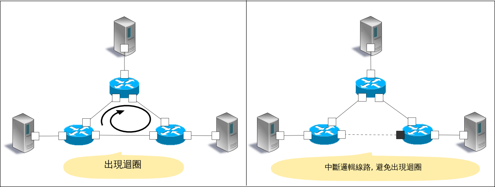
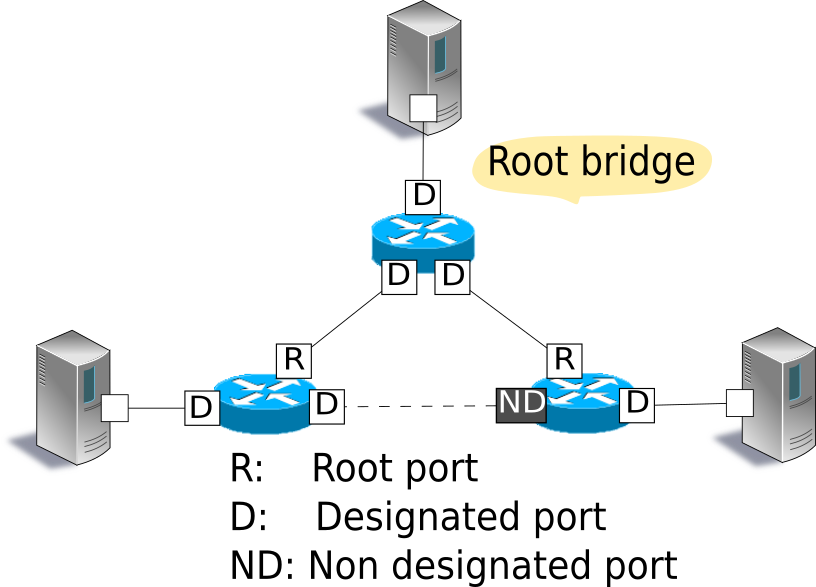
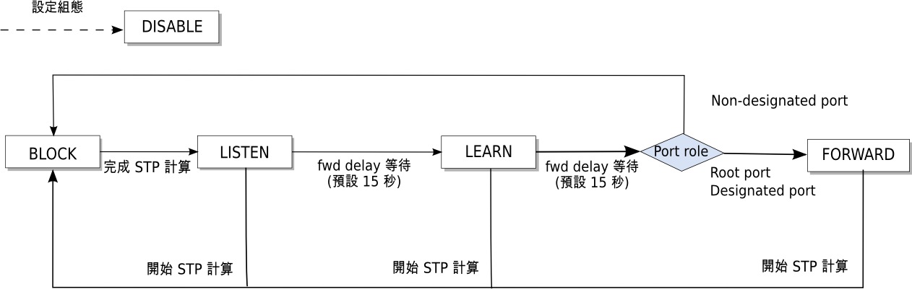
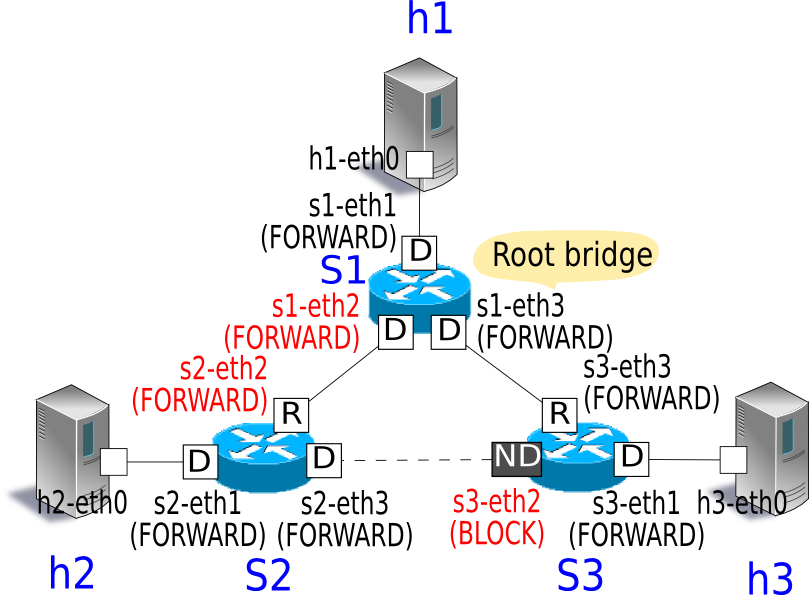
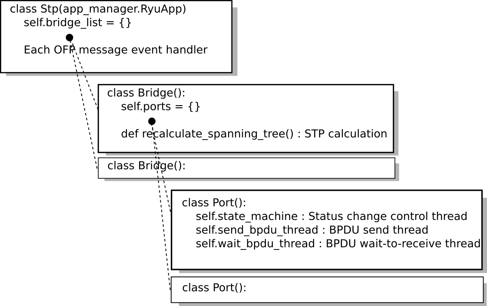

生成樹（ Spanning Tree ）¶
本章將說明與解說 Ryu 所採用的生成樹（ Spanning Tree ）安裝方法。
Spanning Tree¶
生成樹是為了防止在網路的拓璞中出現迴圈（ loop ）進而產生廣播風暴（ broadcast streams ）的技術。而且，藉著應用原本防止迴圈的這項功能，當網路發生問題的時候，則可以達到確保網路的拓璞被重新計算的目的，如此一來就不會讓部分的問題影響整個網路的連通。
生成樹有許多的種類，例如：STP、RSTP、PVST+、MSTP...等不同的種類。本章將說明最基本的 STP。
STP（ spanning tree protocol：IEEE 802.1D ）是讓網路的拓璞在邏輯上是樹狀的結構。經由設定每一個交換器（ 本章節中有時候會使用橋接器稱呼 ）的連接埠讓訊框（ frame ）的傳送為可通過與不可通過，來防止迴圈的產生進而達到阻止網路風暴發生。
{kind=link}
STP 會在橋接器之間交換 BPDU（ Bridge Protocol Data Unit ）封包，分析及比對橋接器之間的連接埠訊息，決定哪些連接埠可以傳送哪些不行。
具體來說，會以下列的順序完成。
1．Root 交換器（ Root bridge ）選舉
橋接器之間的BPDU封包在交換過後，擁有最小的橋接器 ID 即為 Root 。 接下來的 Root 橋接器會發送 original BPDU ，而其他的橋接器僅接收及轉發BPDU。
備註
橋接器 ID 的計算方式是組合已經被設定的橋接器 priority 和特定埠的 MAC 位址而成。
橋接器ID
Upper 2byte Lower 6byte 橋接器 priority MAC 位址
2．決定連接埠的角色
基於每一個連接埠到 Root 橋接器的距離來決定該連接埠的角色。
Root port
橋接器內連接到 Root 距離最短的連接埠。該連接埠將會接收來自 Root 的 BPDU。
Designated port
該連接埠從各個連線到 Root 橋接器距離最短。 主要轉送來自 Root 橋接器的 BPDU 封包，Root 橋接器的所有連接埠均為此種類。
Non designated port
除了 Root port、designated port 以外的連接埠。 訊框的傳送是被禁止的。
{kind=link}
備註
每一個連接埠到 Root 橋接器的距離是基於收到 BPDU 中的設定值，並加上下列的比較計算出來。
第一優先：比較 root path cost 的值
各橋接器在轉送 BPDU 的時候，會將封包中 root path cost 值加上設定的 path cost。 因此 root path cost 值即是各個埠到 Root 橋接器的總和。第二優先：root path cost 相同的話，則比較橋接器 ID
第三優先：若是橋接器 ID 相同時（ 每一個埠都連接到相同的橋接器 ），則比較連接埠 ID
連接埠 ID
upper 2byte lower 2byte 連接埠優先權 連接埠編號
3．連接埠的狀態變化
連接埠的角色決定了之後（ STP的處理完成 ），每一個連接埠會處於 LISTEN 狀態。 之後會如下圖進行狀態的轉換，最後每一個連接埠的角色會進入 FORWARD 狀態或者 BLOCK 狀態。 若是設定為無效的連接埠之後，就會進入 DISABLE 狀態，接著不會進行任何狀態的轉移。
{kind=link}
各個連接埠的狀態決定是否可以傳送訊框。
| 状態 | 說明 |
|---|---|
| DISABLE | 無效連接埠。忽略所有接收到的封包 |
| BLOCK | 僅接受 BPDU 封包 |
| LISTEN | 接受及傳送 BPDU 封包 |
| LEARN | 接受、傳送 BPDU 封包及學習 MAC 位址 |
| FORWARD | 接受、傳送 BPDU 封包、學習 MAC 及訊框的傳送 |
當這些程序在每一台橋接器開始執行之後，進行連接埠傳送封包或抑制封包的決定，如此一來便可以防止迴圈在網路拓璞中發生。
另外，斷線或 BPDU 封包的最大時限（ 預設 20 秒 ）內未收到封包的故障偵測、新的連接埠加入導致網路拓璞改變。 這些變化都會讓每一台橋接器執行上述 1, 2 和 3 程序以建立新的樹狀拓璞（ STP re-calculation ）。
執行 Ryu 應用程式¶
執行 Ryu 生成樹應用程式來達到 OpenFlow 實作的生成樹功能。
Ryu 的原始碼中 simple_switch_stp.py 是 OpenFlow 1.0 所使用，這邊我們要使用新的 OpenFlow 1.3 對應的版本 simple_switch_stp_13.py 。 這個應用程式新增加了生成樹功能到 「 交換器（ Switching Hub ） 」中。
原始碼檔名： simple_switch_stp_13.py
from ryu.base import app_manager
from ryu.controller import ofp_event
from ryu.controller.handler import CONFIG_DISPATCHER, MAIN_DISPATCHER
from ryu.controller.handler import set_ev_cls
from ryu.ofproto import ofproto_v1_3
from ryu.lib import dpid as dpid_lib
from ryu.lib import stplib
from ryu.lib.packet import packet
from ryu.lib.packet import ethernet
class SimpleSwitch13(app_manager.RyuApp):
OFP_VERSIONS = [ofproto_v1_3.OFP_VERSION]
_CONTEXTS = {'stplib': stplib.Stp}
def __init__(self, *args, **kwargs):
super(SimpleSwitch13, self).__init__(*args, **kwargs)
self.mac_to_port = {}
self.stp = kwargs['stplib']
# Sample of stplib config.
# please refer to stplib.Stp.set_config() for details.
config = {dpid_lib.str_to_dpid('0000000000000001'):
{'bridge': {'priority': 0x8000}},
dpid_lib.str_to_dpid('0000000000000002'):
{'bridge': {'priority': 0x9000}},
dpid_lib.str_to_dpid('0000000000000003'):
{'bridge': {'priority': 0xa000}}}
self.stp.set_config(config)
@set_ev_cls(ofp_event.EventOFPSwitchFeatures, CONFIG_DISPATCHER)
def switch_features_handler(self, ev):
datapath = ev.msg.datapath
ofproto = datapath.ofproto
parser = datapath.ofproto_parser
# install table-miss flow entry
#
# We specify NO BUFFER to max_len of the output action due to
# OVS bug. At this moment, if we specify a lesser number, e.g.,
# 128, OVS will send Packet-In with invalid buffer_id and
# truncated packet data. In that case, we cannot output packets
# correctly.
match = parser.OFPMatch()
actions = [parser.OFPActionOutput(ofproto.OFPP_CONTROLLER,
ofproto.OFPCML_NO_BUFFER)]
self.add_flow(datapath, 0, match, actions)
def add_flow(self, datapath, priority, match, actions):
ofproto = datapath.ofproto
parser = datapath.ofproto_parser
inst = [parser.OFPInstructionActions(ofproto.OFPIT_APPLY_ACTIONS,
actions)]
mod = parser.OFPFlowMod(datapath=datapath, priority=priority,
match=match, instructions=inst)
datapath.send_msg(mod)
def delete_flow(self, datapath):
ofproto = datapath.ofproto
parser = datapath.ofproto_parser
for dst in self.mac_to_port[datapath.id].keys():
match = parser.OFPMatch(eth_dst=dst)
mod = parser.OFPFlowMod(
datapath, command=ofproto.OFPFC_DELETE,
out_port=ofproto.OFPP_ANY, out_group=ofproto.OFPG_ANY,
priority=1, match=match)
datapath.send_msg(mod)
@set_ev_cls(stplib.EventPacketIn, MAIN_DISPATCHER)
def _packet_in_handler(self, ev):
msg = ev.msg
datapath = msg.datapath
ofproto = datapath.ofproto
parser = datapath.ofproto_parser
in_port = msg.match['in_port']
pkt = packet.Packet(msg.data)
eth = pkt.get_protocols(ethernet.ethernet)[0]
dst = eth.dst
src = eth.src
dpid = datapath.id
self.mac_to_port.setdefault(dpid, {})
self.logger.info("packet in %s %s %s %s", dpid, src, dst, in_port)
# learn a mac address to avoid FLOOD next time.
self.mac_to_port[dpid][src] = in_port
if dst in self.mac_to_port[dpid]:
out_port = self.mac_to_port[dpid][dst]
else:
out_port = ofproto.OFPP_FLOOD
actions = [parser.OFPActionOutput(out_port)]
# install a flow to avoid packet_in next time
if out_port != ofproto.OFPP_FLOOD:
match = parser.OFPMatch(in_port=in_port, eth_dst=dst)
self.add_flow(datapath, 1, match, actions)
data = None
if msg.buffer_id == ofproto.OFP_NO_BUFFER:
data = msg.data
out = parser.OFPPacketOut(datapath=datapath, buffer_id=msg.buffer_id,
in_port=in_port, actions=actions, data=data)
datapath.send_msg(out)
@set_ev_cls(stplib.EventTopologyChange, MAIN_DISPATCHER)
def _topology_change_handler(self, ev):
dp = ev.dp
dpid_str = dpid_lib.dpid_to_str(dp.id)
msg = 'Receive topology change event. Flush MAC table.'
self.logger.debug("[dpid=%s] %s", dpid_str, msg)
if dp.id in self.mac_to_port:
self.delete_flow(dp)
del self.mac_to_port[dp.id]
@set_ev_cls(stplib.EventPortStateChange, MAIN_DISPATCHER)
def _port_state_change_handler(self, ev):
dpid_str = dpid_lib.dpid_to_str(ev.dp.id)
of_state = {stplib.PORT_STATE_DISABLE: 'DISABLE',
stplib.PORT_STATE_BLOCK: 'BLOCK',
stplib.PORT_STATE_LISTEN: 'LISTEN',
stplib.PORT_STATE_LEARN: 'LEARN',
stplib.PORT_STATE_FORWARD: 'FORWARD'}
self.logger.debug("[dpid=%s][port=%d] state=%s",
dpid_str, ev.port_no, of_state[ev.port_state])
建置實驗環境¶
接下來確認生成樹應用程式的執行動作以完成環境建置。
VM 映像檔的使用、環境設定和登入方法等請參照「 交換器（ Switching Hub ） 」。
為了使用特殊含有迴圈的環境，請參考 「 網路聚合（ Link Aggregation ） 」 並使用 script 進行同樣的網路拓璞建置一個 mininet 的環境。
原始碼名稱： spanning_tree.py
#!/usr/bin/env python
from mininet.cli import CLI
from mininet.link import Link
from mininet.net import Mininet
from mininet.node import RemoteController
from mininet.term import makeTerm
if '__main__' == __name__:
net = Mininet(controller=RemoteController)
c0 = net.addController('c0')
s1 = net.addSwitch('s1')
s2 = net.addSwitch('s2')
s3 = net.addSwitch('s3')
h1 = net.addHost('h1')
h2 = net.addHost('h2')
h3 = net.addHost('h3')
Link(s1, h1)
Link(s2, h2)
Link(s3, h3)
Link(s1, s2)
Link(s2, s3)
Link(s3, s1)
net.build()
c0.start()
s1.start([c0])
s2.start([c0])
s3.start([c0])
net.terms.append(makeTerm(c0))
net.terms.append(makeTerm(s1))
net.terms.append(makeTerm(s2))
net.terms.append(makeTerm(s3))
net.terms.append(makeTerm(h1))
net.terms.append(makeTerm(h2))
net.terms.append(makeTerm(h3))
CLI(net)
net.stop()
在 VM 的環境中執行該程式，交換器 s1 、s2、s3 之間會出現迴圈。

net 命令執行結果如下。
ryu@ryu-vm:~$ sudo ./spanning_tree.py
Unable to contact the remote controller at 127.0.0.1:6633
mininet> net
c0
s1 lo: s1-eth1:h1-eth0 s1-eth2:s2-eth2 s1-eth3:s3-eth3
s2 lo: s2-eth1:h2-eth0 s2-eth2:s1-eth2 s2-eth3:s3-eth2
s3 lo: s3-eth1:h3-eth0 s3-eth2:s2-eth3 s3-eth3:s1-eth3
h1 h1-eth0:s1-eth1
h2 h2-eth0:s2-eth1
h3 h3-eth0:s3-eth1
設定 OpenFlow 版本¶
設定 OpenFlow 的版本為 1.3。 在 xterm 終端機 s1, s2, s3 上使用命令輸入。
Node: s1:
root@ryu-vm:~# ovs-vsctl set Bridge s1 protocols=OpenFlow13
Node: s2:
root@ryu-vm:~# ovs-vsctl set Bridge s2 protocols=OpenFlow13
Node: s3:
root@ryu-vm:~# ovs-vsctl set Bridge s3 protocols=OpenFlow13
執行 switching hub¶
準備已經完成，接下來執行 Ryu 應用程式。在視窗標題為 「Node: c0 (root)」 的 xterm 執行下述的命令。
Node: c0:
root@ryu-vm:~$ ryu-manager ./simple_switch_stp_13.py
loading app simple_switch_stp_13.py
loading app ryu.controller.ofp_handler
loading app ryu.controller.ofp_handler
instantiating app None of Stp
creating context stplib
instantiating app simple_switch_stp_13.py of SimpleSwitch13
instantiating app ryu.controller.ofp_handler of OFPHandler
OpenFlow 交換器啟動時的 STP 計算¶
每一台 OpenFlow 交換器和 Controller 的連接完成後，BPDU 封包的交換就開始了。包括 Root 橋接器的選舉、連接埠的角色、連接埠的狀態轉移。
[STP][INFO] dpid=0000000000000001: Join as stp bridge.
[STP][INFO] dpid=0000000000000001: [port=1] DESIGNATED_PORT / LISTEN
[STP][INFO] dpid=0000000000000001: [port=2] DESIGNATED_PORT / LISTEN
[STP][INFO] dpid=0000000000000001: [port=3] DESIGNATED_PORT / LISTEN
[STP][INFO] dpid=0000000000000002: Join as stp bridge.
[STP][INFO] dpid=0000000000000002: [port=1] DESIGNATED_PORT / LISTEN
[STP][INFO] dpid=0000000000000002: [port=2] DESIGNATED_PORT / LISTEN
[STP][INFO] dpid=0000000000000002: [port=3] DESIGNATED_PORT / LISTEN
[STP][INFO] dpid=0000000000000001: [port=2] Receive superior BPDU.
[STP][INFO] dpid=0000000000000001: [port=1] DESIGNATED_PORT / BLOCK
[STP][INFO] dpid=0000000000000001: [port=2] DESIGNATED_PORT / BLOCK
[STP][INFO] dpid=0000000000000001: [port=3] DESIGNATED_PORT / BLOCK
[STP][INFO] dpid=0000000000000001: Root bridge.
[STP][INFO] dpid=0000000000000001: [port=1] DESIGNATED_PORT / LISTEN
[STP][INFO] dpid=0000000000000001: [port=2] DESIGNATED_PORT / LISTEN
[STP][INFO] dpid=0000000000000001: [port=3] DESIGNATED_PORT / LISTEN
[STP][INFO] dpid=0000000000000002: [port=2] Receive superior BPDU.
[STP][INFO] dpid=0000000000000002: [port=1] DESIGNATED_PORT / BLOCK
[STP][INFO] dpid=0000000000000002: [port=2] DESIGNATED_PORT / BLOCK
[STP][INFO] dpid=0000000000000002: [port=3] DESIGNATED_PORT / BLOCK
[STP][INFO] dpid=0000000000000002: Non root bridge.
[STP][INFO] dpid=0000000000000002: [port=1] DESIGNATED_PORT / LISTEN
[STP][INFO] dpid=0000000000000002: [port=2] ROOT_PORT / LISTEN
[STP][INFO] dpid=0000000000000002: [port=3] DESIGNATED_PORT / LISTEN
[STP][INFO] dpid=0000000000000003: Join as stp bridge.
[STP][INFO] dpid=0000000000000003: [port=1] DESIGNATED_PORT / LISTEN
[STP][INFO] dpid=0000000000000003: [port=2] DESIGNATED_PORT / LISTEN
[STP][INFO] dpid=0000000000000003: [port=3] DESIGNATED_PORT / LISTEN
[STP][INFO] dpid=0000000000000002: [port=3] Receive superior BPDU.
[STP][INFO] dpid=0000000000000002: [port=1] DESIGNATED_PORT / BLOCK
[STP][INFO] dpid=0000000000000002: [port=2] DESIGNATED_PORT / BLOCK
[STP][INFO] dpid=0000000000000002: [port=3] DESIGNATED_PORT / BLOCK
[STP][INFO] dpid=0000000000000002: Non root bridge.
[STP][INFO] dpid=0000000000000002: [port=1] DESIGNATED_PORT / LISTEN
[STP][INFO] dpid=0000000000000002: [port=2] ROOT_PORT / LISTEN
[STP][INFO] dpid=0000000000000002: [port=3] DESIGNATED_PORT / LISTEN
[STP][INFO] dpid=0000000000000001: [port=3] Receive superior BPDU.
[STP][INFO] dpid=0000000000000001: [port=1] DESIGNATED_PORT / BLOCK
[STP][INFO] dpid=0000000000000001: [port=2] DESIGNATED_PORT / BLOCK
[STP][INFO] dpid=0000000000000001: [port=3] DESIGNATED_PORT / BLOCK
[STP][INFO] dpid=0000000000000001: Root bridge.
[STP][INFO] dpid=0000000000000001: [port=1] DESIGNATED_PORT / LISTEN
[STP][INFO] dpid=0000000000000001: [port=2] DESIGNATED_PORT / LISTEN
[STP][INFO] dpid=0000000000000001: [port=3] DESIGNATED_PORT / LISTEN
[STP][INFO] dpid=0000000000000003: [port=2] Receive superior BPDU.
[STP][INFO] dpid=0000000000000003: [port=1] DESIGNATED_PORT / BLOCK
[STP][INFO] dpid=0000000000000003: [port=2] DESIGNATED_PORT / BLOCK
[STP][INFO] dpid=0000000000000003: [port=3] DESIGNATED_PORT / BLOCK
[STP][INFO] dpid=0000000000000003: Non root bridge.
[STP][INFO] dpid=0000000000000003: [port=1] DESIGNATED_PORT / LISTEN
[STP][INFO] dpid=0000000000000003: [port=2] ROOT_PORT / LISTEN
[STP][INFO] dpid=0000000000000003: [port=3] DESIGNATED_PORT / LISTEN
[STP][INFO] dpid=0000000000000003: [port=3] Receive superior BPDU.
[STP][INFO] dpid=0000000000000003: [port=1] DESIGNATED_PORT / BLOCK
[STP][INFO] dpid=0000000000000003: [port=2] DESIGNATED_PORT / BLOCK
[STP][INFO] dpid=0000000000000003: [port=3] DESIGNATED_PORT / BLOCK
[STP][INFO] dpid=0000000000000003: Non root bridge.
[STP][INFO] dpid=0000000000000003: [port=1] DESIGNATED_PORT / LISTEN
[STP][INFO] dpid=0000000000000003: [port=2] NON_DESIGNATED_PORT / LISTEN
[STP][INFO] dpid=0000000000000003: [port=3] ROOT_PORT / LISTEN
[STP][INFO] dpid=0000000000000001: [port=3] Receive superior BPDU.
[STP][INFO] dpid=0000000000000001: [port=1] DESIGNATED_PORT / BLOCK
[STP][INFO] dpid=0000000000000001: [port=2] DESIGNATED_PORT / BLOCK
[STP][INFO] dpid=0000000000000001: [port=3] DESIGNATED_PORT / BLOCK
[STP][INFO] dpid=0000000000000001: Root bridge.
[STP][INFO] dpid=0000000000000001: [port=1] DESIGNATED_PORT / LISTEN
[STP][INFO] dpid=0000000000000001: [port=2] DESIGNATED_PORT / LISTEN
[STP][INFO] dpid=0000000000000001: [port=3] DESIGNATED_PORT / LISTEN
[STP][INFO] dpid=0000000000000002: [port=1] DESIGNATED_PORT / LEARN
[STP][INFO] dpid=0000000000000002: [port=2] ROOT_PORT / LEARN
[STP][INFO] dpid=0000000000000002: [port=3] DESIGNATED_PORT / LEARN
[STP][INFO] dpid=0000000000000003: [port=1] DESIGNATED_PORT / LEARN
[STP][INFO] dpid=0000000000000003: [port=2] NON_DESIGNATED_PORT / LEARN
[STP][INFO] dpid=0000000000000003: [port=3] ROOT_PORT / LEARN
[STP][INFO] dpid=0000000000000001: [port=1] DESIGNATED_PORT / LEARN
[STP][INFO] dpid=0000000000000001: [port=2] DESIGNATED_PORT / LEARN
[STP][INFO] dpid=0000000000000001: [port=3] DESIGNATED_PORT / LEARN
[STP][INFO] dpid=0000000000000002: [port=1] DESIGNATED_PORT / FORWARD
[STP][INFO] dpid=0000000000000002: [port=2] ROOT_PORT / FORWARD
[STP][INFO] dpid=0000000000000002: [port=3] DESIGNATED_PORT / FORWARD
[STP][INFO] dpid=0000000000000003: [port=1] DESIGNATED_PORT / FORWARD
[STP][INFO] dpid=0000000000000003: [port=2] NON_DESIGNATED_PORT / BLOCK
[STP][INFO] dpid=0000000000000003: [port=3] ROOT_PORT / FORWARD
[STP][INFO] dpid=0000000000000001: [port=1] DESIGNATED_PORT / FORWARD
[STP][INFO] dpid=0000000000000001: [port=2] DESIGNATED_PORT / FORWARD
[STP][INFO] dpid=0000000000000001: [port=3] DESIGNATED_PORT / FORWARD
以上的結果，最後每一個連接埠分別為 FORWARD 狀態或 BLOCK 狀態。

為了確認封包不會產生迴圈現象，從 host 1 向 host 2 發送 ping 指令。
在 ping 命令執行之前，先執行 tcpdump 命令以確認封包的接收狀況。
Node: s1:
root@ryu-vm:~# tcpdump -i s1-eth2 arp
Node: s2:
root@ryu-vm:~# tcpdump -i s2-eth2 arp
Node: s3:
root@ryu-vm:~# tcpdump -i s3-eth2 arp
在使用 script 進行網路拓璞的建構的終端機中，進行接下來的指令，從 host 1 向 host 2 發送 ping 封包。
mininet> h1 ping h2
PING 10.0.0.2 (10.0.0.2) 56(84) bytes of data.
64 bytes from 10.0.0.2: icmp_req=1 ttl=64 time=84.4 ms
64 bytes from 10.0.0.2: icmp_req=2 ttl=64 time=0.657 ms
64 bytes from 10.0.0.2: icmp_req=3 ttl=64 time=0.074 ms
64 bytes from 10.0.0.2: icmp_req=4 ttl=64 time=0.076 ms
64 bytes from 10.0.0.2: icmp_req=5 ttl=64 time=0.054 ms
64 bytes from 10.0.0.2: icmp_req=6 ttl=64 time=0.053 ms
64 bytes from 10.0.0.2: icmp_req=7 ttl=64 time=0.041 ms
64 bytes from 10.0.0.2: icmp_req=8 ttl=64 time=0.049 ms
64 bytes from 10.0.0.2: icmp_req=9 ttl=64 time=0.074 ms
64 bytes from 10.0.0.2: icmp_req=10 ttl=64 time=0.073 ms
64 bytes from 10.0.0.2: icmp_req=11 ttl=64 time=0.068 ms
^C
--- 10.0.0.2 ping statistics ---
11 packets transmitted, 11 received, 0% packet loss, time 9998ms
rtt min/avg/max/mdev = 0.041/7.784/84.407/24.230 ms
從 tcpdump 的結果看來，ARP 並沒有出現迴圈的狀態已被確認。
Node: s1:
root@ryu-vm:~# tcpdump -i s1-eth2 arp
tcpdump: WARNING: s1-eth2: no IPv4 address assigned
tcpdump: verbose output suppressed, use -v or -vv for full protocol decode
listening on s1-eth2, link-type EN10MB (Ethernet), capture size 65535 bytes
11:30:24.692797 ARP, Request who-has 10.0.0.2 tell 10.0.0.1, length 28
11:30:24.749153 ARP, Reply 10.0.0.2 is-at 82:c9:d7:e9:b7:52 (oui Unknown), length 28
11:30:29.797665 ARP, Request who-has 10.0.0.1 tell 10.0.0.2, length 28
11:30:29.798250 ARP, Reply 10.0.0.1 is-at c2:a4:54:83:43:fa (oui Unknown), length 28
Node: s2:
root@ryu-vm:~# tcpdump -i s2-eth2 arp
tcpdump: WARNING: s2-eth2: no IPv4 address assigned
tcpdump: verbose output suppressed, use -v or -vv for full protocol decode
listening on s2-eth2, link-type EN10MB (Ethernet), capture size 65535 bytes
11:30:24.692824 ARP, Request who-has 10.0.0.2 tell 10.0.0.1, length 28
11:30:24.749116 ARP, Reply 10.0.0.2 is-at 82:c9:d7:e9:b7:52 (oui Unknown), length 28
11:30:29.797659 ARP, Request who-has 10.0.0.1 tell 10.0.0.2, length 28
11:30:29.798254 ARP, Reply 10.0.0.1 is-at c2:a4:54:83:43:fa (oui Unknown), length 28
Node: s3:
root@ryu-vm:~# tcpdump -i s3-eth2 arp
tcpdump: WARNING: s3-eth2: no IPv4 address assigned
tcpdump: verbose output suppressed, use -v or -vv for full protocol decode
listening on s3-eth2, link-type EN10MB (Ethernet), capture size 65535 bytes
11:30:24.698477 ARP, Request who-has 10.0.0.2 tell 10.0.0.1, length 28
網路發現故障時重新計算STP¶
接下來，確認斷線發生的時候會進行 STP 的重新計算。 在每一個 OpenFlow 交換器啟動之後以及 STP 的計算完成之後，執行下列指令後讓線路中斷。
Node: s2:
root@ryu-vm:~# ifconfig s2-eth2 down
斷線被偵測到的時候，STP 會被重新計算。
[STP][INFO] dpid=0000000000000002: [port=2] Link down.
[STP][INFO] dpid=0000000000000002: [port=2] DESIGNATED_PORT / DISABLE
[STP][INFO] dpid=0000000000000002: [port=1] DESIGNATED_PORT / BLOCK
[STP][INFO] dpid=0000000000000002: [port=3] DESIGNATED_PORT / BLOCK
[STP][INFO] dpid=0000000000000002: Root bridge.
[STP][INFO] dpid=0000000000000002: [port=1] DESIGNATED_PORT / LISTEN
[STP][INFO] dpid=0000000000000002: [port=3] DESIGNATED_PORT / LISTEN
[STP][INFO] dpid=0000000000000001: [port=2] Link down.
[STP][INFO] dpid=0000000000000001: [port=2] DESIGNATED_PORT / DISABLE
[STP][INFO] dpid=0000000000000002: [port=1] DESIGNATED_PORT / LEARN
[STP][INFO] dpid=0000000000000002: [port=3] DESIGNATED_PORT / LEARN
[STP][INFO] dpid=0000000000000003: [port=2] Wait BPDU timer is exceeded.
[STP][INFO] dpid=0000000000000003: [port=1] DESIGNATED_PORT / BLOCK
[STP][INFO] dpid=0000000000000003: [port=2] DESIGNATED_PORT / BLOCK
[STP][INFO] dpid=0000000000000003: [port=3] DESIGNATED_PORT / BLOCK
[STP][INFO] dpid=0000000000000003: Root bridge.
[STP][INFO] dpid=0000000000000003: [port=1] DESIGNATED_PORT / LISTEN
[STP][INFO] dpid=0000000000000003: [port=2] DESIGNATED_PORT / LISTEN
[STP][INFO] dpid=0000000000000003: [port=3] DESIGNATED_PORT / LISTEN
[STP][INFO] dpid=0000000000000003: [port=3] Receive superior BPDU.
[STP][INFO] dpid=0000000000000003: [port=1] DESIGNATED_PORT / BLOCK
[STP][INFO] dpid=0000000000000003: [port=2] DESIGNATED_PORT / BLOCK
[STP][INFO] dpid=0000000000000003: [port=3] DESIGNATED_PORT / BLOCK
[STP][INFO] dpid=0000000000000003: Non root bridge.
[STP][INFO] dpid=0000000000000003: [port=1] DESIGNATED_PORT / LISTEN
[STP][INFO] dpid=0000000000000003: [port=2] DESIGNATED_PORT / LISTEN
[STP][INFO] dpid=0000000000000003: [port=3] ROOT_PORT / LISTEN
[STP][INFO] dpid=0000000000000002: [port=3] Receive superior BPDU.
[STP][INFO] dpid=0000000000000002: [port=1] DESIGNATED_PORT / BLOCK
[STP][INFO] dpid=0000000000000002: [port=3] DESIGNATED_PORT / BLOCK
[STP][INFO] dpid=0000000000000002: Non root bridge.
[STP][INFO] dpid=0000000000000002: [port=1] DESIGNATED_PORT / LISTEN
[STP][INFO] dpid=0000000000000002: [port=3] ROOT_PORT / LISTEN
[STP][INFO] dpid=0000000000000003: [port=1] DESIGNATED_PORT / LEARN
[STP][INFO] dpid=0000000000000003: [port=2] DESIGNATED_PORT / LEARN
[STP][INFO] dpid=0000000000000003: [port=3] ROOT_PORT / LEARN
[STP][INFO] dpid=0000000000000002: [port=1] DESIGNATED_PORT / LEARN
[STP][INFO] dpid=0000000000000002: [port=3] ROOT_PORT / LEARN
[STP][INFO] dpid=0000000000000003: [port=1] DESIGNATED_PORT / FORWARD
[STP][INFO] dpid=0000000000000003: [port=2] DESIGNATED_PORT / FORWARD
[STP][INFO] dpid=0000000000000003: [port=3] ROOT_PORT / FORWARD
[STP][INFO] dpid=0000000000000002: [port=1] DESIGNATED_PORT / FORWARD
[STP][INFO] dpid=0000000000000002: [port=3] ROOT_PORT / FORWARD
在此之前 s3-eth2 為 BLOCK 狀態，但現在連接埠的狀態為 FORWARD ，而訊框將可以再次被傳送。

從線路故障的狀態回復時重新計算 STP¶
接下來，斷線回復的時候 STP 將被重新計算。在斷線的狀態下執行下列的命令讓連接埠恢復。
Node: s2:
root@ryu-vm:~# ifconfig s2-eth2 up
連線恢復後被偵測到，STP 就會進行再次的計算。
[STP][INFO] dpid=0000000000000002: [port=2] Link down.
[STP][INFO] dpid=0000000000000002: [port=2] DESIGNATED_PORT / DISABLE
[STP][INFO] dpid=0000000000000002: [port=2] Link up.
[STP][INFO] dpid=0000000000000002: [port=2] DESIGNATED_PORT / LISTEN
[STP][INFO] dpid=0000000000000001: [port=2] Link up.
[STP][INFO] dpid=0000000000000001: [port=2] DESIGNATED_PORT / LISTEN
[STP][INFO] dpid=0000000000000001: [port=2] Receive superior BPDU.
[STP][INFO] dpid=0000000000000001: [port=1] DESIGNATED_PORT / BLOCK
[STP][INFO] dpid=0000000000000001: [port=2] DESIGNATED_PORT / BLOCK
[STP][INFO] dpid=0000000000000001: [port=3] DESIGNATED_PORT / BLOCK
[STP][INFO] dpid=0000000000000001: Root bridge.
[STP][INFO] dpid=0000000000000001: [port=1] DESIGNATED_PORT / LISTEN
[STP][INFO] dpid=0000000000000001: [port=2] DESIGNATED_PORT / LISTEN
[STP][INFO] dpid=0000000000000001: [port=3] DESIGNATED_PORT / LISTEN
[STP][INFO] dpid=0000000000000002: [port=2] Receive superior BPDU.
[STP][INFO] dpid=0000000000000002: [port=1] DESIGNATED_PORT / BLOCK
[STP][INFO] dpid=0000000000000002: [port=2] DESIGNATED_PORT / BLOCK
[STP][INFO] dpid=0000000000000002: [port=3] DESIGNATED_PORT / BLOCK
[STP][INFO] dpid=0000000000000002: Non root bridge.
[STP][INFO] dpid=0000000000000002: [port=1] DESIGNATED_PORT / LISTEN
[STP][INFO] dpid=0000000000000002: [port=2] ROOT_PORT / LISTEN
[STP][INFO] dpid=0000000000000002: [port=3] DESIGNATED_PORT / LISTEN
[STP][INFO] dpid=0000000000000003: [port=2] Receive superior BPDU.
[STP][INFO] dpid=0000000000000003: [port=1] DESIGNATED_PORT / BLOCK
[STP][INFO] dpid=0000000000000003: [port=2] DESIGNATED_PORT / BLOCK
[STP][INFO] dpid=0000000000000003: [port=3] DESIGNATED_PORT / BLOCK
[STP][INFO] dpid=0000000000000003: Non root bridge.
[STP][INFO] dpid=0000000000000003: [port=1] DESIGNATED_PORT / LISTEN
[STP][INFO] dpid=0000000000000003: [port=2] NON_DESIGNATED_PORT / LISTEN
[STP][INFO] dpid=0000000000000003: [port=3] ROOT_PORT / LISTEN
[STP][INFO] dpid=0000000000000001: [port=1] DESIGNATED_PORT / LEARN
[STP][INFO] dpid=0000000000000001: [port=2] DESIGNATED_PORT / LEARN
[STP][INFO] dpid=0000000000000001: [port=3] DESIGNATED_PORT / LEARN
[STP][INFO] dpid=0000000000000002: [port=1] DESIGNATED_PORT / LEARN
[STP][INFO] dpid=0000000000000002: [port=2] ROOT_PORT / LEARN
[STP][INFO] dpid=0000000000000002: [port=3] DESIGNATED_PORT / LEARN
[STP][INFO] dpid=0000000000000003: [port=1] DESIGNATED_PORT / LEARN
[STP][INFO] dpid=0000000000000003: [port=2] NON_DESIGNATED_PORT / LEARN
[STP][INFO] dpid=0000000000000003: [port=3] ROOT_PORT / LEARN
[STP][INFO] dpid=0000000000000001: [port=1] DESIGNATED_PORT / FORWARD
[STP][INFO] dpid=0000000000000001: [port=2] DESIGNATED_PORT / FORWARD
[STP][INFO] dpid=0000000000000001: [port=3] DESIGNATED_PORT / FORWARD
[STP][INFO] dpid=0000000000000002: [port=1] DESIGNATED_PORT / FORWARD
[STP][INFO] dpid=0000000000000002: [port=2] ROOT_PORT / FORWARD
[STP][INFO] dpid=0000000000000002: [port=3] DESIGNATED_PORT / FORWARD
[STP][INFO] dpid=0000000000000003: [port=1] DESIGNATED_PORT / FORWARD
[STP][INFO] dpid=0000000000000003: [port=2] NON_DESIGNATED_PORT / BLOCK
[STP][INFO] dpid=0000000000000003: [port=3] ROOT_PORT / FORWARD
可以確認目前的狀態跟應用程式啟動時有相同的樹狀結構，而訊框可以再次被傳送。
{kind=link}
使用 OpenFlow 完成生成樹¶
讓我們看一下在 Ryu 生成樹應用程式中，如何使用 OpenFlow 完成生成樹的功能。
OpenFlow 1.3 提供 config 來設定連接埠的狀態。 發送 Port Modification 訊息到 OpenFlow 交換器以控制連接埠對訊框的轉送行為。
| 名稱 | 說明 |
|---|---|
| OFPPC_PORT_DOWN | 連接埠無效狀態 |
| OFPPC_NO_RECV | 丟棄所有接收到的封包 |
| OFPPC_NO_FWD | 停止轉送封包 |
| OFPPC_NO_PACKET_IN | table-miss 發生時，不發送 Packet-In 訊息 |
為了控制連接埠接收 BPDU 封包和非 BPDU 封包，收到 BPDU 封包就發送 Packet-In 的 Flow Entry 和接收 BPDU 以外的封包就丟棄的 Flow Entry ，分別透過 Flow Mod 訊息新增到 OpenFlow 交換器中。
Controller 對各個 OpenFlow 交換器進行下面 port 設定和 Flow Entry 的管理，以達到控制連接埠狀態對於 BPDU 的接收傳送和 MAC 位址的學習（ BPDU 以外則是封包的接收 ）和訊框的轉送（ BPDU 以外則是封包的傳送 ）。
| 名稱 | 設定值 | Flow Entry |
|---|---|---|
| DISABLE | NO_RECV／NO_FWD | 無 |
| BLOCK | NO_FWD | BPDU Packet-In／BPDU以外drop |
| LISTEN | 無 | BPDU Packet-In／BPDU以外drop |
| LEARN | 無 | BPDU Packet-In／BPDU以外drop |
| FORWARD | 無 | BPDU Packet-In |
備註
為了精簡化，Ryu 裡的生成樹函式庫並不處理 LEARN 狀態的 MAC 位址（ 接收 BPDU 以外的封包 ）學習。
為了做這些設定，Controller 產生 BPDU 封包基於 OpenFlow 交換器連接時所收集的連接埠資訊和每一個 OpenFlow 交換器所接收的 BPDU 封包中所設定的 Root 橋接器資訊，來發送 Packet-Out 訊息達到交換器之間互相交換 BPDU 的效果。
使用 Ryu 實作生成樹¶
接下來，檢視一下 Ryu 所用來實作生成樹的原始碼。生成樹的原始碼存放在 Ryu 的原始碼當中。
ryu/lib/stplib.py
ryu/app/simple_switch_stp.py
stplib.py 是用來提供 BPDU 封包的交換和連接埠的角色、狀態管理的生成樹函式庫。 simple_switch_stp.py 是一個應用程式，用來讓交換器的應用程式新增生成樹函式庫以增加生成樹功能使用。
注意
因為 simple_switch_stp.py 是 OpenFlow 1.0 專用的應用程式， 本章為 「 執行 Ryu 應用程式 」因此使用 OpenFlow 1.3 所對應的 simple_switch_stp_13.py 作為詳細說明的目標。
函式庫的安裝¶
函式庫概述¶
{kind=link}
STP 函式庫（ STP 實體 ）偵測到 OpenFlow 交換器和 Controller 已經連結時， Bridge 類別的實體和 Port 類別的實體就會被產生。
當每一個類別的實體產生、啟動之後。
- 從 STP 類別實體接收到 OpenFlow 訊息。
- Bridge 類別實體運算 STP（ Root 橋接器的選擇，每一個連接埠的角色選擇 ）
- Port 類別實體的狀態變化，BPDU 封包接收及傳送
以上動作完成後，即可達成生成樹的功能。
設定項目¶
如果使用 Stp.set_config() 方法，則 STP 函式庫有提供橋接器連接埠的設定項目。
可用的設定項目如下：
bridge
名稱 說明 預設值 priority橋接器優先權 0x8000 sys_ext_id設定 VLAN-ID (*目前的 STP 函式庫不支援 VLAN) 0 max_ageBPDU 封包的傳送接收逾時 20[sec] hello_timeBPDU 封包的傳送接收間隔 2 [sec] fwd_delay每一個連接埠停留在 LISTEN 或 LEARN 的時間 15[sec] port
名稱 說明 預設值 priority連接埠優先權 0x80 path_costLink Cost 基於連線速度自動設定 enable連接埠的有效/無效 True
傳送 BPDU 封包¶
傳送 BPDU 封包的動作為 BPDU 封包傳送執行緒（ Port.send_bpdu_thread ）所執行，
當連接埠的角色為 designated port（ DESIGNATED_PORT ）時，定期通知 Root 橋接器的 hello time（ Port.port_times.hello_time ：預設 2 秒 ）封包就會被產生（ Port._generate_config_bpdu() ）並進行傳送（ Port.ofctl.send_packet_out() ）。
class Port(object):
def __init__(self, dp, logger, config, send_ev_func, timeout_func,
topology_change_func, bridge_id, bridge_times, ofport):
super(Port, self).__init__()
# ...
# BPDU handling threads
self.send_bpdu_thread = PortThread(self._transmit_bpdu)
# ...
def _transmit_bpdu(self):
while True:
# Send config BPDU packet if port role is DESIGNATED_PORT.
if self.role == DESIGNATED_PORT:
# ...
bpdu_data = self._generate_config_bpdu(flags)
self.ofctl.send_packet_out(self.ofport.port_no, bpdu_data)
# ...
hub.sleep(self.port_times.hello_time)
即將被轉送的 BPDU 封包所設定的內容會來自 OpenFlow 交換器與 Controller 連接時所收集到的連接埠資訊（ Port.ofport ）和曾經接受到的 BPDU 封包中 Root 橋接器的資訊（ Port.port_priority、Port.port_times ）。
class Port(object):
def _generate_config_bpdu(self, flags):
src_mac = self.ofport.hw_addr
dst_mac = bpdu.BRIDGE_GROUP_ADDRESS
length = (bpdu.bpdu._PACK_LEN + bpdu.ConfigurationBPDUs.PACK_LEN
+ llc.llc._PACK_LEN + llc.ControlFormatU._PACK_LEN)
e = ethernet.ethernet(dst_mac, src_mac, length)
l = llc.llc(llc.SAP_BPDU, llc.SAP_BPDU, llc.ControlFormatU())
b = bpdu.ConfigurationBPDUs(
flags=flags,
root_priority=self.port_priority.root_id.priority,
root_mac_address=self.port_priority.root_id.mac_addr,
root_path_cost=self.port_priority.root_path_cost+self.path_cost,
bridge_priority=self.bridge_id.priority,
bridge_mac_address=self.bridge_id.mac_addr,
port_priority=self.port_id.priority,
port_number=self.ofport.port_no,
message_age=self.port_times.message_age+1,
max_age=self.port_times.max_age,
hello_time=self.port_times.hello_time,
forward_delay=self.port_times.forward_delay)
pkt = packet.Packet()
pkt.add_protocol(e)
pkt.add_protocol(l)
pkt.add_protocol(b)
pkt.serialize()
return pkt.data
接收 BPDU 封包¶
接收 BPDU 封包是由 STP 類別的 Packet-In 事件管理器（ Event handler ）所發現， 經由 Bridge 類別實體通知給 Port 類別實體。事件管理器的實作請參考 「 交換器（ Switching Hub ） 」。
接收到 BPDU 封包的連接埠會對先前接收到的 BPDU 封包以及本次接收到的封包中的橋接器 ID 進行比對（ Stp.compare_bpdu_info() ），來決定 STP 是否必須重新計算路徑。
若是相比之前的封包之下，本次收到的封包為優先封包（ superior BPDU ）、（ SUPERIOR ）時，則代表網路的拓璞已經改變，例如「一個新的 Root 橋接器已經被加入網路」，此時則必須開始進行 STP 的重新計算。
class Port(object):
def rcv_config_bpdu(self, bpdu_pkt):
# Check received BPDU is superior to currently held BPDU.
root_id = BridgeId(bpdu_pkt.root_priority,
bpdu_pkt.root_system_id_extension,
bpdu_pkt.root_mac_address)
root_path_cost = bpdu_pkt.root_path_cost
designated_bridge_id = BridgeId(bpdu_pkt.bridge_priority,
bpdu_pkt.bridge_system_id_extension,
bpdu_pkt.bridge_mac_address)
designated_port_id = PortId(bpdu_pkt.port_priority,
bpdu_pkt.port_number)
msg_priority = Priority(root_id, root_path_cost,
designated_bridge_id,
designated_port_id)
msg_times = Times(bpdu_pkt.message_age,
bpdu_pkt.max_age,
bpdu_pkt.hello_time,
bpdu_pkt.forward_delay)
rcv_info = Stp.compare_bpdu_info(self.designated_priority,
self.designated_times,
msg_priority, msg_times)
# ...
return rcv_info, rcv_tc
故障偵測¶
直接的故障例如：斷線，或者間接的故障例如：在一定時間內沒有接收到 Root 橋接器所發出的 BPDU 封包，這時候 STP 就必須進行重新計算。
斷線是由 STP 類別的 PortStatus 事件管理器所偵測，並透過 Bridge 類別的實體進行通知。
BPDU 封包的接收逾時是由 Port 類別的 BPDU 封包接收執行緒（ Port.wait_bpdu_thread ）所發現。
在 max age（ 預設 20 秒 ）之間，如果沒有接收到 Root 橋接器發來的 BPDU 封包，就判斷為間接故障，並且對 Bridge 類別實體發送通知。
BPDU 接收逾時的更新和逾時的偵測分別是 hub 模組（ ryu.lib.hub ）的 hub.Event 和 hub.Timeout 。
hub.Event 經由 hub.Event.wait() 進入 wait 狀態，透過 hub.Event.set() 中斷執行緒。
hub.Timeout 指定在一定時間內若 try 無法結束執行時，則發送 hub.Timeout 的例外事件。
當 hub.Event 進入 wait 狀態，並且 hub.Timeout 所指定的時間內尚未執行 hub.Event.set() 時，則判斷為 BPDU 封包的接收逾時，故開始進行 Bridge 類別的 STP 重新計算。
class Port(object):
def __init__(self, dp, logger, config, send_ev_func, timeout_func,
topology_change_func, bridge_id, bridge_times, ofport):
super(Port, self).__init__()
# ...
self.wait_bpdu_timeout = timeout_func
# ...
self.wait_bpdu_thread = PortThread(self._wait_bpdu_timer)
# ...
def _wait_bpdu_timer(self):
time_exceed = False
while True:
self.wait_timer_event = hub.Event()
message_age = (self.designated_times.message_age
if self.designated_times else 0)
timer = self.port_times.max_age - message_age
timeout = hub.Timeout(timer)
try:
self.wait_timer_event.wait()
except hub.Timeout as t:
if t is not timeout:
err_msg = 'Internal error. Not my timeout.'
raise RyuException(msg=err_msg)
self.logger.info('[port=%d] Wait BPDU timer is exceeded.',
self.ofport.port_no, extra=self.dpid_str)
time_exceed = True
finally:
timeout.cancel()
self.wait_timer_event = None
if time_exceed:
break
if time_exceed: # Bridge.recalculate_spanning_tree
hub.spawn(self.wait_bpdu_timeout)
接收的 BPDU 封包比對動作（ Stp.compare_bpdu_info() ）結束後發現是 SUPERIOR 或 REPEATED 時，就開始接收 Root 橋接器發送過來的封包，並且更新逾時數值（ Port._update_wait_bpdu_timer() ）。
執行 hub.Event 中 Port.wait_timer_event 的 set() 將 Port.wait_timer_event 從 wait 狀態解除，即可讓 BPDU 封包接收執行緒（ Port.wait_bpdu_thread ）不要進入 except hub.Timeout 的區間並進行處理，進而重新設定計時器後繼續接收下一個 BPDU 封包。
class Port(object):
def rcv_config_bpdu(self, bpdu_pkt):
# ...
rcv_info = Stp.compare_bpdu_info(self.designated_priority,
self.designated_times,
msg_priority, msg_times)
# ...
if ((rcv_info is SUPERIOR or rcv_info is REPEATED)
and (self.role is ROOT_PORT
or self.role is NON_DESIGNATED_PORT)):
self._update_wait_bpdu_timer()
# ...
def _update_wait_bpdu_timer(self):
if self.wait_timer_event is not None:
self.wait_timer_event.set()
self.wait_timer_event = None
STP 計算¶
STP 計算（ Root 橋接器選擇、每一個連接埠的角色選擇 ）是由 Bridge 類別所執行。
STP 重新計算開始的時候代表網路拓璞已經發生變化，此時封包的傳遞有可能會有出現迴圈，因此所有的連接埠會進入 BLOCK（ port.down ）狀態並觸發拓璞改變事件（ EventTopologyChange ) 通知上層 APL，初始已經學習完畢的 MAC 位址連接埠。
然後 Bridge._spanning_tree_algorithm() 開始動作以進行 Root 橋接器的選擇和連接埠的角色設定，所有的連接埠會從 LISTEN 狀態（ port.up ）開始狀態的變化。
class Bridge(object):
def recalculate_spanning_tree(self, init=True):
""" Re-calculation of spanning tree. """
# All port down.
for port in self.ports.values():
if port.state is not PORT_STATE_DISABLE:
port.down(PORT_STATE_BLOCK, msg_init=init)
# Send topology change event.
if init:
self.send_event(EventTopologyChange(self.dp))
# Update tree roles.
port_roles = {}
self.root_priority = Priority(self.bridge_id, 0, None, None)
self.root_times = self.bridge_times
if init:
self.logger.info('Root bridge.', extra=self.dpid_str)
for port_no in self.ports.keys():
port_roles[port_no] = DESIGNATED_PORT
else:
(port_roles,
self.root_priority,
self.root_times) = self._spanning_tree_algorithm()
# All port up.
for port_no, role in port_roles.items():
if self.ports[port_no].state is not PORT_STATE_DISABLE:
self.ports[port_no].up(role, self.root_priority,
self.root_times)
為了 Root 橋接器的選擇，像是橋接器 ID 之類的資訊會拿來跟每一個連接埠所接收到的 BPDU 封包進行比對（ Bridge._select_root_port ）。
接著會出現這樣的結果：選出 Root 連接埠（ 本身的橋接器資訊和從連接埠所收到的其他橋接器資訊比對後結果較差 ）、其他的橋接器開始做為 Root 橋接器、或選出 designated ports（ Bridge._select_designated_port ）和選出 non-designated ports（ Root 連接埠 / designated ports 以外的 non-designated ports 選出 ）。
反之 Root 橋接器如果沒有被發現（ 本身的橋接器所帶的資訊為最優先的情況 ），則自己就會轉變為 Root 橋接器並設定其所有的連接埠為 designated ports。
class Bridge(object):
def _spanning_tree_algorithm(self):
""" Update tree roles.
- Root bridge:
all port is DESIGNATED_PORT.
- Non root bridge:
select one ROOT_PORT and some DESIGNATED_PORT,
and the other port is set to NON_DESIGNATED_PORT."""
port_roles = {}
root_port = self._select_root_port()
if root_port is None:
# My bridge is a root bridge.
self.logger.info('Root bridge.', extra=self.dpid_str)
root_priority = self.root_priority
root_times = self.root_times
for port_no in self.ports.keys():
if self.ports[port_no].state is not PORT_STATE_DISABLE:
port_roles[port_no] = DESIGNATED_PORT
else:
# Other bridge is a root bridge.
self.logger.info('Non root bridge.', extra=self.dpid_str)
root_priority = root_port.designated_priority
root_times = root_port.designated_times
port_roles[root_port.ofport.port_no] = ROOT_PORT
d_ports = self._select_designated_port(root_port)
for port_no in d_ports:
port_roles[port_no] = DESIGNATED_PORT
for port in self.ports.values():
if port.state is not PORT_STATE_DISABLE:
port_roles.setdefault(port.ofport.port_no,
NON_DESIGNATED_PORT)
return port_roles, root_priority, root_times
連接埠的狀態轉移¶
連接埠的狀態轉移是由 Port 類別的狀態轉移控制執行緒（ Port.state_machine ）所處理。
下一個狀態的轉移時限是從 Port._get_timer() 取得。當發生逾時之後就會從 Port._get_next_state() 取得接下來將轉移的狀態並進行移轉。而 STP 再次重新計算的時候，連接埠的狀態就會直接使用 Port._change_status() 切換至 BLOCK 的狀態，不論先前的狀態為何。這樣的處理跟 故障偵測 」一樣，是由 hub 模組的 hub.Event 和 hub.Timeout 來達成。
class Port(object):
def _state_machine(self):
""" Port state machine.
Change next status when timer is exceeded
or _change_status() method is called."""
# ...
while True:
self.logger.info('[port=%d] %s / %s', self.ofport.port_no,
role_str[self.role], state_str[self.state],
extra=self.dpid_str)
self.state_event = hub.Event()
timer = self._get_timer()
if timer:
timeout = hub.Timeout(timer)
try:
self.state_event.wait()
except hub.Timeout as t:
if t is not timeout:
err_msg = 'Internal error. Not my timeout.'
raise RyuException(msg=err_msg)
new_state = self._get_next_state()
self._change_status(new_state, thread_switch=False)
finally:
timeout.cancel()
else:
self.state_event.wait()
self.state_event = None
def _get_timer(self):
timer = {PORT_STATE_DISABLE: None,
PORT_STATE_BLOCK: None,
PORT_STATE_LISTEN: self.port_times.forward_delay,
PORT_STATE_LEARN: self.port_times.forward_delay,
PORT_STATE_FORWARD: None}
return timer[self.state]
def _get_next_state(self):
next_state = {PORT_STATE_DISABLE: None,
PORT_STATE_BLOCK: None,
PORT_STATE_LISTEN: PORT_STATE_LEARN,
PORT_STATE_LEARN: (PORT_STATE_FORWARD
if (self.role is ROOT_PORT or
self.role is DESIGNATED_PORT)
else PORT_STATE_BLOCK),
PORT_STATE_FORWARD: None}
return next_state[self.state]
實作應用程式¶
本章說明 「 執行 Ryu 應用程式 」中 OpenFlow 1.3 所對應的生成樹應用程式（ simple_switch_stp_13.py ）和 「 交換器（ Switching Hub ） 」 的交換器之間的差異。
設定「_CONTEXTS」¶
跟 「 網路聚合（ Link Aggregation ） 」 一樣用 CONTEXT 登錄，藉以應用相同的 STP 函式庫。
from ryu.lib import stplib
# ...
class SimpleSwitch13(app_manager.RyuApp):
OFP_VERSIONS = [ofproto_v1_3.OFP_VERSION]
_CONTEXTS = {'stplib': stplib.Stp}
# ...
設定組態¶
使用 STP 函式庫的 set_config() 方法來進行組態設定，下面是簡單的例子。
| OpenFlow 交換器 | 名稱 | 設定值 |
|---|---|---|
| dpid=0000000000000001 | bridge.priority | 0x8000 |
| dpid=0000000000000002 | bridge.priority | 0x9000 |
| dpid=0000000000000003 | bridge.priority | 0xa000 |
使用這個設定時 dpid=0000000000000001 的 OpenFlow 交換器的橋接器 ID 總會是最小值，而 Root 橋接器也會選擇該交換器。
class SimpleSwitch13(app_manager.RyuApp):
# ...
def __init__(self, *args, **kwargs):
super(SimpleSwitch13, self).__init__(*args, **kwargs)
self.mac_to_port = {}
self.stp = kwargs['stplib']
# Sample of stplib config.
# please refer to stplib.Stp.set_config() for details.
config = {dpid_lib.str_to_dpid('0000000000000001'):
{'bridge': {'priority': 0x8000}},
dpid_lib.str_to_dpid('0000000000000002'):
{'bridge': {'priority': 0x9000}},
dpid_lib.str_to_dpid('0000000000000003'):
{'bridge': {'priority': 0xa000}}}
self.stp.set_config(config)
STP 事件處理¶
跟 「 網路聚合（ Link Aggregation ） 」 一樣，準備事件管理器來接收來自 STP 函式庫的通知。
使用 STP 函式庫中定義的 stplib.EventPacketIn 事件來接收 BPDU 以外的封包。
因此封包管理及處理動作跟 「 交換器（ Switching Hub ） 」 相同。
class SimpleSwitch13(app_manager.RyuApp): @set_ev_cls(stplib.EventPacketIn, MAIN_DISPATCHER) def _packet_in_handler(self, ev): # ...
接收網路拓璞的變動事件通知（ stplib.EventTopologyChange ）用以初始化已經學習的 MAC 位址和已經註冊的 Flow Entry 。
class SimpleSwitch13(app_manager.RyuApp): def delete_flow(self, datapath): ofproto = datapath.ofproto parser = datapath.ofproto_parser for dst in self.mac_to_port[datapath.id].keys(): match = parser.OFPMatch(eth_dst=dst) mod = parser.OFPFlowMod( datapath, command=ofproto.OFPFC_DELETE, out_port=ofproto.OFPP_ANY, out_group=ofproto.OFPG_ANY, priority=1, match=match) datapath.send_msg(mod) # ... @set_ev_cls(stplib.EventTopologyChange, MAIN_DISPATCHER) def _topology_change_handler(self, ev): dp = ev.dp dpid_str = dpid_lib.dpid_to_str(dp.id) msg = 'Receive topology change event. Flush MAC table.' self.logger.debug("[dpid=%s] %s", dpid_str, msg) if dp.id in self.mac_to_port: self.delete_flow(dp) del self.mac_to_port[dp.id]
接收到連接埠的狀態通知事件（ stplib.EventPortStateChange ）並且將連接埠的狀態輸出。
class SimpleSwitch13(app_manager.RyuApp): @set_ev_cls(stplib.EventPortStateChange, MAIN_DISPATCHER) def _port_state_change_handler(self, ev): dpid_str = dpid_lib.dpid_to_str(ev.dp.id) of_state = {stplib.PORT_STATE_DISABLE: 'DISABLE', stplib.PORT_STATE_BLOCK: 'BLOCK', stplib.PORT_STATE_LISTEN: 'LISTEN', stplib.PORT_STATE_LEARN: 'LEARN', stplib.PORT_STATE_FORWARD: 'FORWARD'} self.logger.debug("[dpid=%s][port=%d] state=%s", dpid_str, ev.port_no, of_state[ev.port_state])
經過以上的處理，透過提供生成樹功能的函式庫和使用該函式庫的應用程式，實作成了擁有生成樹功能的交換器應用程式。